O Clube de Regatas do Flamengo, comumente conhecido apenas como Flamengo, é um dos clubes de futebol mais populares e bem-sucedidos do Brasil. Sua história remonta ao final do século XIX, quando um grupo de jovens remadores decidiu fundar um clube esportivo na cidade do Rio de Janeiro.
Isso Mesmo! Tudo começou em 17 de novembro de 1895, quando um grupo de remadores se reuniu na Praia do Russel, próxima à Baía de Guanabara. A ideia inicial era criar um clube dedicado exclusivamente ao remo, esporte aquático muito popular na época. Assim, o Clube de Regatas do Flamengo foi oficialmente fundado. O nome "Flamengo" foi escolhido como uma homenagem à fragata "Flamengo," um dos navios da Marinha brasileira que participou da Revolta da Armada, um importante evento na história do Brasil.
Os primeiros uniformes do Flamengo eram nas cores vermelho e preto, inspiradas nas cores da bandeira do time de remo inglês, o Rowing Club. O clube também adotou o escudo com o formato de um coração, que permanece uma das marcas registradas do time até hoje. Com o tempo, o Flamengo expandiu suas atividades para incluir outros esportes, incluindo o futebol, que estava começando a ganhar popularidade no Brasil. Em 1912, o Flamengo criou sua primeira equipe de futebol, e desde então, o esporte se tornou uma parte integral da identidade do clube.
Zico é o maior artilheiro da história do Flamengo e marcou mais de 500 gols em sua carreira no clube. Ele também foi um grande criador de jogadas e deu muitas assistências ao longo de sua carreira.
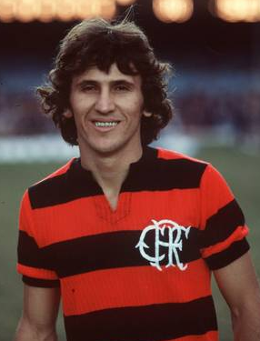
Herói dos títulos da Libertadores em 2019 e 2022 e maior artilheiro do Flamengo no século XXI. Gabigol é o principal ídolo de uma nova geração de torcedores rubro-negros, que viram o artilheiro.
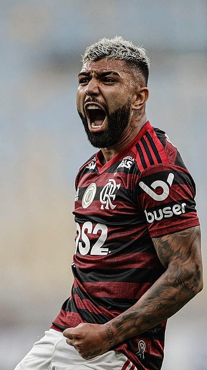
O grande parceiro de Zico nas maiores conquistas da história do Flamengo. Apesar de ser destro, se consagrou como lateral-esquerdo na seleção brasileira de 1982. Um dos melhores que passou na seleção.
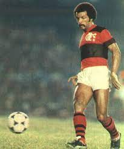
Maior lateral-direito da história do Rubro-Negro, Leandro atuou no Flamengo durante toda a sua carreira profissional, onde conquistou os títulos da Copa Libertadores e Mundial, além dos Brasileiros de 1980, 82, 83 e 87.
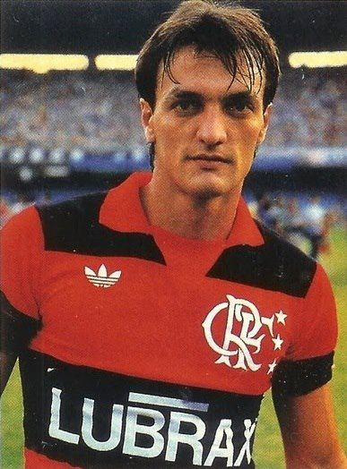
Um dos maiores estrangeiros do Flamengo em todos os tempos, Arrascaeta é, desde 2019 até hoje, sinônimo de classe, golaços, visão de jogo e muita raça em campo.
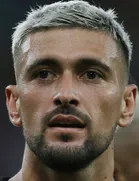
Com Zizinho, o Flamengo ganhou o seu primeiro tricampeonato estadual entre 1942, 1943 e 1944. Isso além do Campeonato Carioca de 1939. Zizinho saiu do Flamengo.
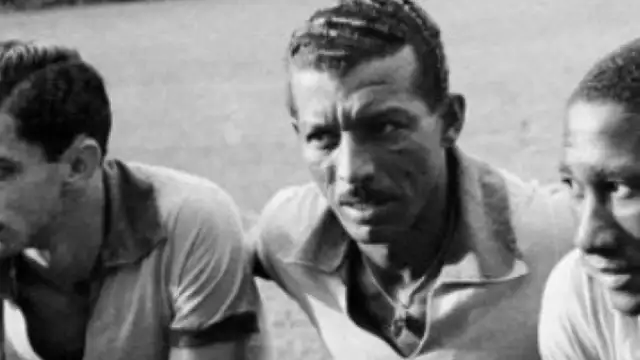
Apontado como o melhor jogador da Copa de 1938, o Diamante Negro é apontado considerado um dos primeiros grandes ídolos do futebol brasileiro.
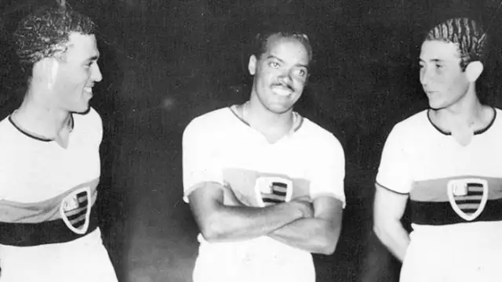
Considerado um dos mais habilidosos jogadores de sua geração, Adílio brilhou nas conquistas das Copas Libertadores e do Mundial de clubes ao lado de Zico.
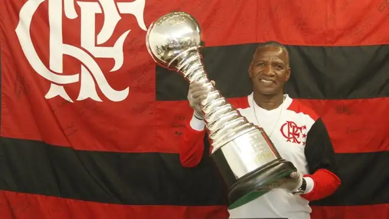
Um dos maiores campeões da história do Flamengo, Andrade participou de quatro conquistas de Brasileirões pelo Rubro-Negro (1980,82,83 e 87), além de também ter integrado o time campeão da Libertadores e do mundial interclubes. Como se não bastasse, ainda foi um dos principais responsáveis pelo título brasileiro de 2009, quando assumiu um elenco desacreditado e o conduziu scomo treinador.
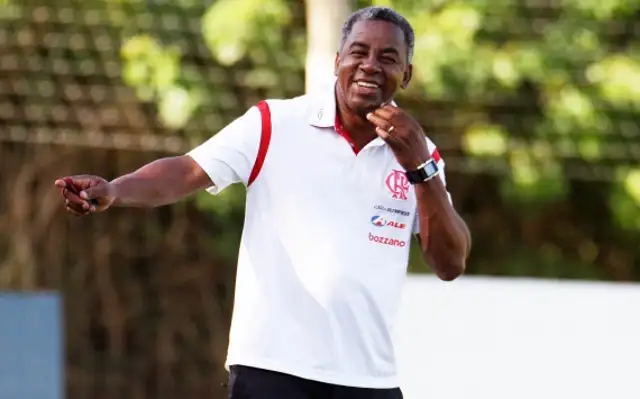
Pet, como também é conhecido, entrou para a história do Flamengo inicialmente pelo gol de falta que garantiu o título estadual de 2001, contra o Vasco. Após uma saída conturbada, o sérvio aceitou retornar como forma de quitar uma dívida que o clube tinha com ele, apesar de muita desconfiança. Ao contrário do que muitos acreditavam, ele se tornou peça fundamental do título nacional de 2009.
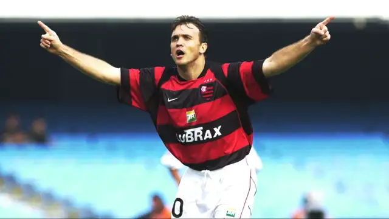
O Imperador sempre foi apontado como uma das principais promessas das categorias de base do Flamengo. Porém, quando chegou ao profissional não foi devidamente aproveitado e logo deixou o clube. Ainda assim, regressou à Gávea, onde foi o herói da conquista do Brasileirão de 2009. Além de ser uma peça dentro de campo, imperador era uma peça fora de campo.
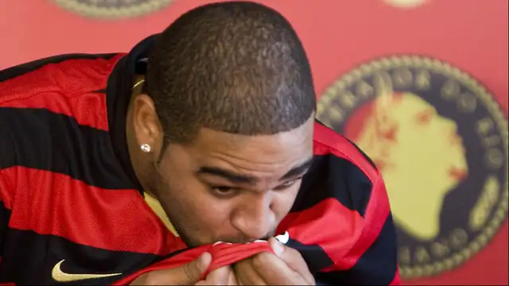
Dida foi o maior ídolo de Zico. O Galinho de Quintino jamais escondeu a admiração pelo atacante e por isso fez de tudo para atuar no Flamengo. Mesmo franzino, tornou-se o maior artilheiro do clube até a era Zico, marcando 257 gols em 364 jogos entre 1954 e 1963. Esse foi um dos idolos de Zico, que tempos depois o mesmo o ultrapassou, histórias que o futebol é capaz de proporcionar.
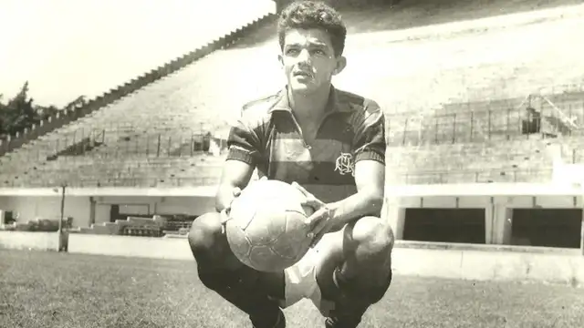
8 Campeonato Brasileiro – 1980, 1982, 1983, 1987, 1992, 2009, 2019 e 2020
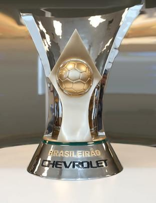3 Taça Libertadores da América – 1981, 2019 e 2022
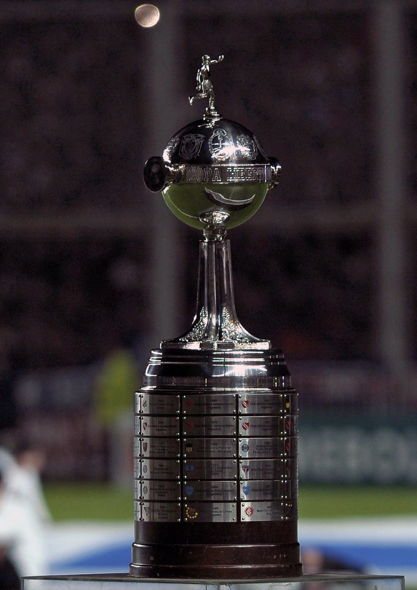4 Copa do Brasil – 1990 (invicto), 2006, 2013 e 2022
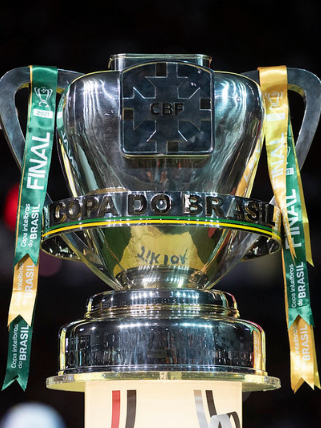1 Mundial interclubes – 1981
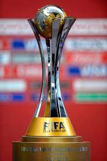37 Cariocas (...2020, 2021)
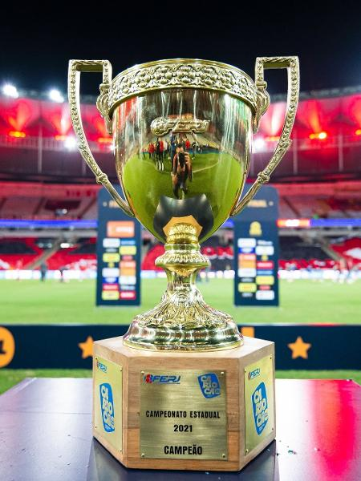2 Supercopa do Brasil – 2020 e 2021
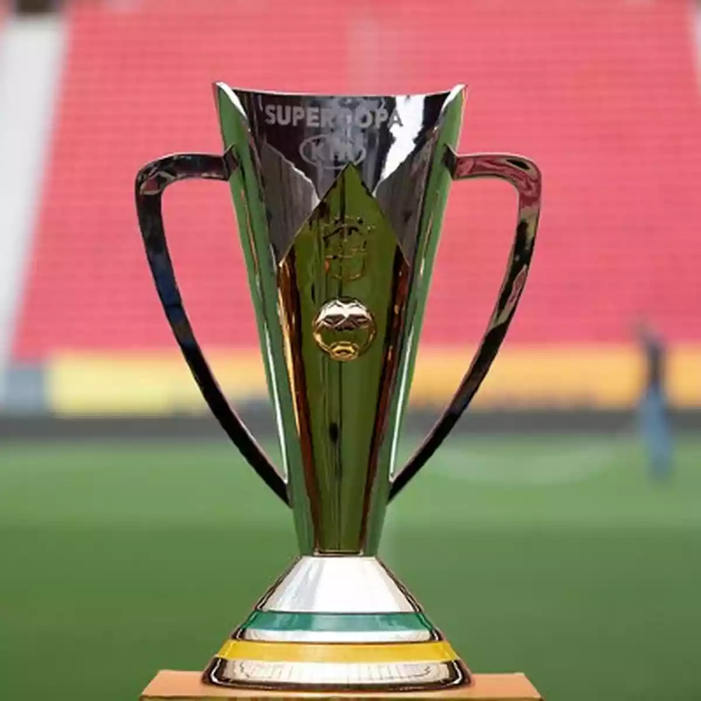